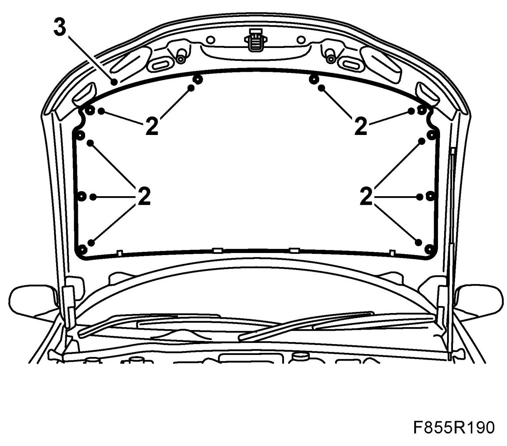
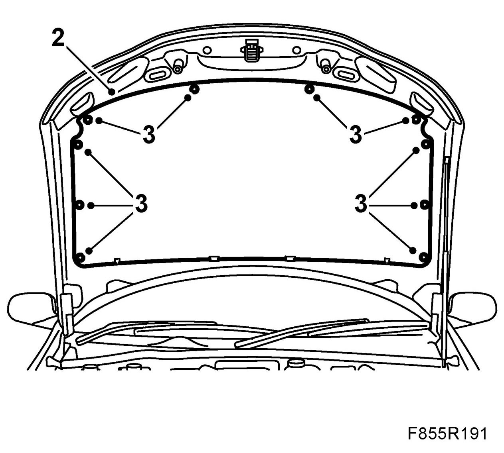

Hood Insulator / Pad: Service and Repair
Insulation, Bonnet
To remove
1. Open the bonnet.

2. Clips with screw: Remove the bonnet insulation clips by unscrewing the centre screw. Pull the clips directly outward.
Clips with hole: Insert 84 71 179 Removal tool, clips under the clip. Insert a 1.5 mm allen key with ball into the hole and release the clip. Pull out the clip.
3. Release the insulation from the hooks on the back edge of the bonnet.
To fit
1. Fit the insulation onto the hooks on the back edge of the bonnet.

2. Centre the insulation so that the clip holes align.
3. Clips with screw: Fit the clips and press in the centre screws.
Clips with hole: Fit the clips.
4. Close the bonnet.